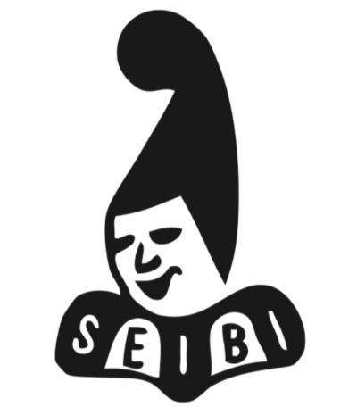

Meine Fasnacht
Meine Clique

Meine Clique heisst Seibi. Ich bin seit ich 7 Jahre alt bin in dieser Clique und ich habe es nie bereut, dort hingegangen zu sein. Davor war ich noch ein Jahr in einer anderen Clique, in der Pfluderi-Clique.
Ich habe in der Seibi noch ein Jahr bei den Gnöpf, den Kleinsten, mitgepfiffen und bevor ich in die Junge Garde gekommen bin. Die Fasnacht 2022 war meine letzte Fasnacht in der Jungen Garde und jetzt komme ich in den Stamm.
Hier gehts zur Webseite der Seibi.
Hier gehts zur Webseite der Seibi.
Meine Erlebnisse
Was viele nicht wissen ist, dass die Fasnacht das ganze Jahr über läuft. Nach der Fasnacht ist meistens einen Monat bis nach den Osterferien Pause und dann geht es wieder los. Jede Woche hat man mindestens eine Stunde Instrumentalunterricht in einer Gruppe. Im Sommer und Herbst finden sogenannte Feste statt. Das sind Wettbewerbe für Pfeiffer: innen und Trommler: innen, die aus der ganzen Schweiz kommen. Es ist immer superlustig und jedes Jahr ein tolles Erlebnis.
Nach den Herbstferien fangen meistens die Proben für s Offizielle an. Das ist auch ein Wettbewerb von ganz Basel. In Gruppen, aber auch Einzeln startet man dort und spielt auf einer grossen Bühne vor einer Jury vor. Das findet meistens so Ende Januar statt. Parallel laufen viele Vorfasnachtsveranstaltungen: das Charivari, das Pfyfferli, das Drummeli oder auch das Laaaferi. Alle Leute kommen zusammen und haben es schon vor der Fasnacht lustig zusammen. Und dann ist das Jahr auch schon wieder vorbei und die «drey scheenschte Dääg» stehen vor der Tür.
Nach den Herbstferien fangen meistens die Proben für s Offizielle an. Das ist auch ein Wettbewerb von ganz Basel. In Gruppen, aber auch Einzeln startet man dort und spielt auf einer grossen Bühne vor einer Jury vor. Das findet meistens so Ende Januar statt. Parallel laufen viele Vorfasnachtsveranstaltungen: das Charivari, das Pfyfferli, das Drummeli oder auch das Laaaferi. Alle Leute kommen zusammen und haben es schon vor der Fasnacht lustig zusammen. Und dann ist das Jahr auch schon wieder vorbei und die «drey scheenschte Dääg» stehen vor der Tür.